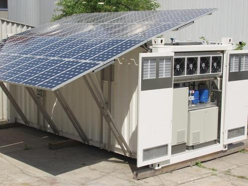
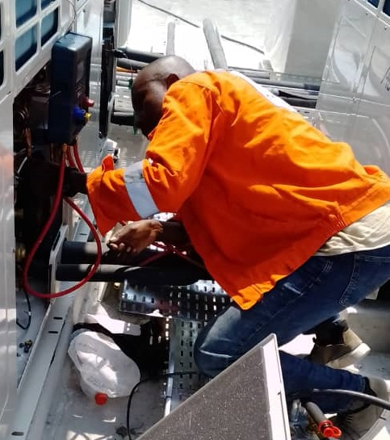
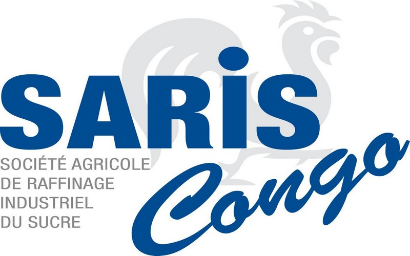

Solution éco responsable
de Froid et climatisation
Devenir le leader en solutions de froid et de climatisation éco responsables en Afrique
NOTRE HISTOIRE
Fondée en 2017 à Pointe-Noire par Dorsel Kimbouala-Ngoma,
un jeune
ingénieur en mécanique de production, KIM COOLING
est née de la nécessité
de combler un manque local en services
de climatisation et réfrigération
efficaces.
Partant d’une petite équipe dynamique, l’entreprise s’est
focalisée sur des
installations personnalisées pour divers
clients, allant de petits commerces à
des bâtiments industriels,
se distinguant rapidement par son service client sur
mesure
et son engagement durable.



Vision de l’entreprise
Devenir le leader en solutions de froid et de climatisation éco-responsables en Afrique, en intégrant des technologies de pointe et des pratiques durables.
Être l’entreprise de référence en République du Congo et dans la région pour des solutions de froid et de climatisation personnalisées.
Devenir un centre d'excellence pour la formation et l'expertise technique en froidet climatisation.

Mission et valeurs de l'entreprise
KIM COOLING est guidée par une mission claire : fournir des solutions de climatisation et de réfrigération innovantes, efficaces et écologiques.
Nos valeurs clés incluent l’intégrité, la qualité, l’honnêteté et la satisfaction client.
Que faisons nous ?
Installation de systèmes de
climatisation
Mise en place de climatiseurs split, multi-split, de systèmes de climatisation centralisée, et d'autres types de systèmes adaptés aux besoins spécifiques des clients.
EN SAVOIR PLUSInstallation de systèmes de
réfrigération HVAC
Installation de chambres froides, de vitrines réfrigérées, de systèmes de réfrigération pour l'industrie agroalimentaire, pharmaceutique, etc.
EN SAVOIR PLUSMaintenance préventive &
corrective
Services réguliers pour vérifier, nettoyer et réparer les composants des systèmes de climatisation et de réfrigération afin d'éviter des pannes futures.
EN SAVOIR PLUSAudit énergétique et conseils
Évaluation de l’efficacité énergétique des installations existantes et recommandations pour améliorer la performance et réduire les coûts d’exploitation.
EN SAVOIR PLUSVente et fourniture
d’équipements :
Offre d’une large gamme d’équipements de climatisation et de réfrigération adaptés aux besoins des clients tels que compresseurs industriels, poste a souder : outillage de maintenance froid ...
EN SAVOIR PLUS
Expertise et contrôle des
conformités des chambres
froides
Étude, contrôle et réalisation des travaux de plomberie industrielle, de maintenance industrielle et de la maintenance multitechnique.
EN SAVOIR PLUSNOS FORMATIONS
système foid et cimatisation HVAC/h3>
Découvrez notre formation en Système Froid et Climatisation HVAC (Heating, Ventilation, Air Conditioning). Acquérez les compétences indispensables pour installer, entretenir, diagnostiquer et réparer les systèmes de chauffage, ventilation, climatisation et réfrigération.
Electricité
Transformez votre carrière avec notre formation en électricité, conçue pour vous doter des connaissances et competences essentielles pour exceller dans le domaine.Apprenez à travailler en toute sécurité et efficacité avec des systèmes électriques résidentieles, commerciaux et industriels.
Automatisme et instrumentation
La formation en climatisation centrale est conçue pour former des techniciens spécialisés dans l'installation, l'entretien, le diagnostic et la réparation des systèmes de climatisation centralisés utilisés dans les bâtiments résidentiels, commerciaux et industriels.
Mécanique énergétique
La formation en climatisation centrale est conçue pour former des techniciens spécialisés dans l'installation, l'entretien, le diagnostic et la réparation des systèmes de climatisation centralisés utilisés dans les bâtiments résidentiels, commerciaux et industriels.
Dessin et conception assistées à
l'ordinateur
La formation en climatisation centrale est conçue pour former des techniciens spécialisés dans l'installation, l'entretien, le diagnostic et la réparation des systèmes de climatisation centralisés utilisés dans les bâtiments résidentiels, commerciaux et industriels.
Auto énergétique
La formation en climatisation centrale est conçue pour former des techniciens spécialisés dans l'installation, l'entretien, le diagnostic et la réparation des systèmes de climatisation centralisés utilisés dans les bâtiments résidentiels, commerciaux et industriels.
Climatisation centrale (en module)
La formation en climatisation centrale est conçue pour former des techniciens spécialisés dans l'installation, l'entretien, le diagnostic et la réparation des systèmes de climatisation centralisés utilisés dans les bâtiments résidentiels, commerciaux et industriels.
Froid auto
La formation en climatisation centrale est conçue pour former des techniciens spécialisés dans l'installation, l'entretien, le diagnostic et la réparation des systèmes de climatisation centralisés utilisés dans les bâtiments résidentiels, commerciaux et industriels.
Froid ménager
La formation en climatisation centrale est conçue pour former des techniciens spécialisés dans l'installation, l'entretien, le diagnostic et la réparation des systèmes de climatisation centralisés utilisés dans les bâtiments résidentiels, commerciaux et industriels.
Climatisation de confort
Maitrisez l'installation, l'entretien et la réparation des système de climatisation les plus avancés, adaptés aux maisons, bureaux et batiments commerciaux
Froid industriel et commercial
Découvrez notre formation en Froid industriel rt commercial : un programme complet conçu pour vous transformer en expert de la concption, l'instalationn, l'entretien et le depannage des système industriels et commerciaux
Pourquoi nous choisir?
KIM-COOLING s'est donné l'obligation de présenter plusieurs avantages et points forts pour se distinguer sur le marché congolais et répondre efficacement aux besoins de ses clients.

Expertise technique
L'entreprise possède une expertise approfondie
dans les technologies de réfrigération et de
climatisation.
Certifications
L'entreprise respecte les normes de sécurité et
environnementales en vigueur, comme celles liées
aux gaz réfrigérants et à l'efficacité énergétique.
Service client
Un excellent service client, incluant la réactivité
face aux demandes, la disponibilité pour les
urgences, et un bon suivi post-installation ou
réparation.
LES PROJETS REALISES
Project ORCA : Construction des systèmes
froid et climatisation
en repondant de maniere adequate à ces besoins nous avons
pu garantir non seulement le confort et la satisfaction des
clients et personnel, mais aussi la qualité et la securité des
produits, tout enoptimisant les couts énergétiques et en
respectant les normes environnementales.
NOS PARTENAIRES


Contact Experts
Adresse :
Pointe-Noire, République du Congo
Téléphone :
+242 06 417 49 49
+242 04 447 42 32
Email :
contact@kim-cooling.com
dieusekim@gmail.com
Heures d'ouverture :
Lundi - Vendredi : 08h - 17h
Samedi : 08h - 12h